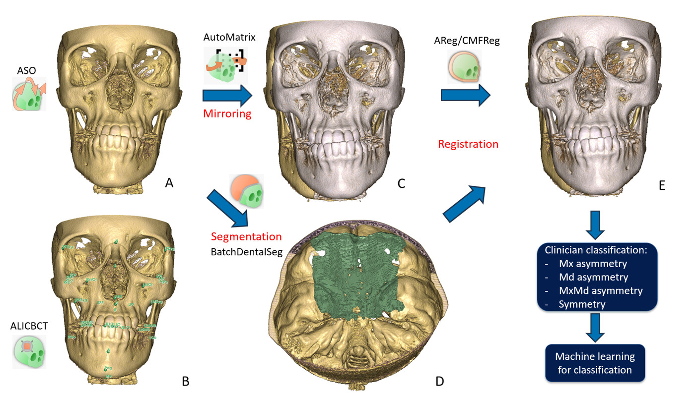

VFACE — จำแนกความไม่สมมาตรของใบหน้า
VFACE วัดและจำแนกความไม่สมมาตรของใบหน้าเชิงโครงกระดูกจาก CBCT เพียงหนึ่งภาพต่อผู้ป่วยหนึ่งราย ไม่จำเป็นต้องมีภาพสแกนครั้งที่สองเพื่อเปรียบเทียบ: โมดูล สร้าง "ภาพสะท้อน" ของผู้ป่วยขึ้นเอง แล้วเปรียบเทียบผู้ป่วยกับ ภาพสะท้อนนั้น


ใช้เมื่อใด
เมื่อต้องการประเมินความไม่สมมาตรของใบหน้าบน CBCT อย่างเป็นรูปธรรม — วัดเป็นตัวเลข แทนการกะด้วยตา — และอาจต้องการรู้ว่าเกี่ยวข้องกับขากรรไกรล่าง ขากรรไกรบน หรือทั้งสองส่วน VFACE เริ่มจากวอลุ่มดิบ: ไม่ต้องเตรียมการแบ่งส่วน (segmentation) หรือ จุดสังเกตทางกายวิภาค (landmark) ไว้ล่วงหน้า โมดูลจัดการทั้งหมดเอง
VFACE ไม่ใช่เครื่องมือที่ทำงานเดี่ยว: มันเป็นตัวประสานงาน (orchestrator) ที่เรียกใช้ โมดูลอื่นหกตัวของส่วนขยายต่อกันไปทีละตัว (การรีแซมเปิล การจัดแนว การแบ่งส่วนกระดูก การลงทะเบียนภาพ (registration) การแบ่งส่วนพื้นผิวฟัน และการจำแนก) สำหรับ ผู้ป่วยหลายรายแบบกลุ่ม การรันทั้งหมดจะใช้เวลานาน — ประมาณ หนึ่งชั่วโมงต่อผู้ป่วยหนึ่งรายขึ้นอยู่กับเครื่อง — และทำให้เครื่องมืออื่นไม่ว่าง ระหว่างที่รัน ควรวางแผนรันเมื่อไม่ต้องใช้โมดูลอื่นในเวลา เดียวกัน โดยทั่วไปคือรันข้ามคืนสำหรับชุดข้อมูล
สิ่งที่ต้องใช้ สิ่งที่จะได้
สิ่งที่ต้องเตรียม
- โฟลเดอร์ของ CBCT T1 ดิบ หนึ่งไฟล์ต่อผู้ป่วยหนึ่งราย (
.nii,.nii.gz,.nrrd,.nrrd.gz,.gipl,.gipl.gz) - ไม่ต้องมีการแบ่งส่วนหรือ landmark มาก่อน: โมดูลเริ่มจากวอลุ่ม เพียงอย่างเดียว
- โมเดลที่ฝึกแล้ว (ALI, AMASSS, DentalSegmentator และตัวจำแนกของ VFACE) ดาวน์โหลดเพียงครั้งเดียว
- โฟลเดอร์เอาต์พุต บนไดรฟ์ที่มีพื้นที่เหลือเพียงพอ
สิ่งที่จะได้
- ตารางค่าวัดของผู้ป่วยแต่ละราย (ระยะทางและมุมของโครงกระดูก)
- ไฟล์ผลการจำแนกขั้นสุดท้าย ระบุว่าผู้ป่วยสมมาตรหรือ ไม่สมมาตร และความไม่สมมาตรเกี่ยวข้องกับขากรรไกรล่างและ/หรือ ขากรรไกรบนหรือไม่
- พื้นผิวกระดูกและแผนที่ระยะทางแบบสี (heatmap) เพื่อแสดง ว่าความแตกต่างอยู่ตรงไหน (ไม่บังคับ)
ขั้นตอน
- ดาวน์โหลดโมเดล มีปุ่มเฉพาะที่ดึง น้ำหนักทั้งหมดที่โมดูลซึ่งถูกเรียกใช้ต่อกันต้องการ ทำเพียงครั้งเดียว
- ระบุโฟลเดอร์อินพุตที่มี CBCT T1 ของคุณ และ โฟลเดอร์เอาต์พุต
- เลือกโหมดการวิเคราะห์ สำหรับการศึกษาความไม่สมมาตร (กรณี ทั่วไป) VFACE สร้างภาพสะท้อนของผู้ป่วยและให้ผลการจำแนก ยังมีโหมด "longitudinal studies" สำหรับเปรียบเทียบจุดเวลาจริงสองจุดของผู้ป่วย รายเดียวกัน แต่ในกรณีนี้จะไม่ให้ผลการจำแนก
- เลือกสิ่งที่ต้องการเป็นเอาต์พุต ค่าวัดและ การจำแนก (โหมด quantitative) พื้นผิวและแผนที่ระยะทาง (โหมด visualization) หรือทั้งสองอย่าง
- เริ่มรัน pipeline ประมวลผลผู้ป่วยทีละราย มีจุดหยุดเพื่อตรวจทานแทรกไว้ในขั้นตอนสำคัญ: จุดหยุดจะโหลดผลลัพธ์ระหว่างทางเข้า ฉาก (scene) และให้คุณตรวจสอบ หรือแม้แต่แก้ไข landmark หรือปรับการลงทะเบียนภาพ ก่อนดำเนินการต่อ
วิธีอ่านผลลัพธ์
ก่อนจะถึงตาราง มาดูภาพกันก่อน นี่คือค่าวัดที่ตัวจำแนกใช้เป็นอินพุต — ผู้ป่วยเทียบกับภาพสะท้อนของตัวเอง และระยะห่างที่เหลืออยู่หลังวางทับบน โครงสร้างเพียงโครงสร้างเดียว
- 0. ขั้นต้นน้ำ — ALI +
semi_aso_cbct: นำระนาบกึ่งกลางซากิตตัลไปวางบน x = 0 - 1.
t1_landmarks— 26 จุดที่ ALI ทำนายไว้สำหรับภาพนี้ - 2.
t1_masks— AMASSS: พื้นผิวกระดูกที่ใช้วัดแผนที่ - 3.
mirror_scans—diag(-1, 1, 1)การสะท้อนผ่านระนาบ x = 0 - 4.
registration_cb/_max/_mand— บนโครงสร้างเดียว - 5.
bone_surfaces— แผนที่ModelDistanceของ VFACE เอง
ModelDistance ทั้งสามแผ่น
ตัวสะท้อนคือ Matrix_mirror.tfm = diag(-1, 1, 1)
ไม่มีการเลื่อนตำแหน่งเลย — เป็นการสะท้อนบริสุทธิ์ผ่านระนาบ
x = 0 ซึ่งเป็นระนาบของพิกัดโลก ไม่มีอะไรในเมทริกซ์นี้
ที่รู้จักตัวผู้ป่วยเลย และนั่นคือเหตุผลที่ห่วงโซ่ขั้นต้นน้ำมีอยู่: เพื่อนำระนาบกึ่งกลาง
ซากิตตัลของผู้ป่วยไปวางให้ตรงกับระนาบนั้น การสะท้อนถูกทำเป็นภาพเคลื่อนไหวโดยผ่าน
สถานะเสื่อมของมันเอง คือ diag(0, 1, 1) เพราะการสะท้อนไม่สามารถประมาณค่า
ระหว่างกลางด้วยการหมุนได้ — ดีเทอร์มิแนนต์จะต้องเปลี่ยนจาก −1 ไปเป็น +1
โดยไม่เคยเป็นศูนย์ ระนาบจะวาดตัวเองขึ้นมาตอนกลางของการพลิก
แล้วจึงถึงประเด็นสำคัญ createlistprocess.py เรียก
ModelToModel Distance สามครั้ง ครั้งละหนึ่งการลงทะเบียนภาพ และแผนที่ทั้งสามแผ่น
ไม่ได้บอกเรื่องเดียวกัน เมื่อวางทับบนฐานกะโหลกศีรษะ
ใบหน้าทั้งหน้าเคลื่อนไปด้านข้าง: มัธยฐาน |d| 7.0 mm จุดยอด 46% เกิน 8 mm
พิสัยตั้งแต่ −25 ถึง +32 เมื่อวางทับบนขากรรไกรบน กะโหลกส่วนบน
บรรจบกับภาพสะท้อนของตัวเองในระยะ 1.0 mm และเมื่อวางทับบน
ขากรรไกรล่าง อยู่ที่ 0.45 mm การวางทับบนโครงสร้างใด
ย่อมทำให้โครงสร้างนั้นสมมาตรโดยปริยาย — นั่นไม่ใช่ข้อบกพร่องของการวัด
แต่คือตัวการวัดเอง ทิศทางของเมทริกซ์เหล่านั้นได้มาจากการวัด
ไม่ใช่การสันนิษฐาน elastix เขียนการจับคู่จาก fixed→moving ดังนั้น
ตัวที่พาภาพสะท้อนไปวางบน T1 คือเมทริกซ์ผกผัน: ระยะห่างเฉลี่ยระหว่างพื้นผิว
ลดจาก 2.88 mm เหลือ 1.73 mm เมื่อใช้ตัวผกผัน และเพิ่มเป็น 4.57 เมื่อใช้
เมทริกซ์ตามที่เขียนไว้ — แย่กว่าการปล่อยภาพสะท้อนไว้เฉย ๆ ตัวสร้างข้อมูล
จึงลองทั้งสองทิศทางเทียบกับ T1 ในทุกครั้งที่รัน เก็บทิศทางที่ดีกว่าไว้ และปฏิเสธ
ที่จะเขียนไฟล์ถ้าไม่มีทิศทางใดดีกว่าการไม่ทำอะไรเลย พื้นผิวสามชิ้นที่ต่างกัน
สเกลสามแบบที่ต่างกัน ที่เห็นนี้คือไฟล์ที่ VFACE เขียนออกมาจริง: แผนที่
ฐานกะโหลกศีรษะครอบคลุมกะโหลกทั้งชิ้น แผนที่ขากรรไกรบนครอบคลุมเฉพาะกะโหลกส่วนบน
และแผนที่ขากรรไกรล่างครอบคลุมเฉพาะขากรรไกรล่าง — ดังนั้นเมื่อแผนที่ครอบคลุม
เพียงโครงสร้างเดียว ส่วนที่เหลือของกะโหลกจะคงเป็นสีเทากลางอยู่ข้างหลัง พิสัยของ
แผนที่เหล่านี้กว้างตั้งแต่ ±2.6 mm ถึง ±32 แต่ละแผ่นจึงมีสเกล
ของตัวเองตามที่แสดงในแถบสี ให้เปรียบเทียบกันด้วยตัวเลขในแถบสถานะ ไม่ใช่ด้วยเฉดสี
สีน้ำเงินคือค่าลบ สีแดงคือค่าบวก สีเทาอ่อนคือศูนย์ — ระยะทางนี้มีเครื่องหมาย
ตามที่ VFACE เขียนออกมา ตัวควบคุมที่สำคัญคือแถวปุ่มด้านบน
และขั้นตอนที่อยู่ด้านล่างคลิกได้ หากต้องการหยุดดูที่ขั้นใดขั้นหนึ่ง ที่นี่ไม่มี
ภาพสแกนครั้งที่สอง — “T2” คือภาพสะท้อนของผู้ป่วยเอง
ผลลัพธ์สุดท้ายคือตารางการจำแนก หนึ่งแถวต่อผู้ป่วยหนึ่งราย มีข้อมูล สามส่วน:
- Symmetric / Asymmetric — ข้อสรุปโดยรวม (สมมาตร / ไม่สมมาตร)
- Mandible: yes / no — ประเมินเฉพาะเมื่อผู้ป่วยถูก จำแนกว่าไม่สมมาตร (ขากรรไกรล่าง)
- Maxilla: yes / no — ประเมินภายใต้เงื่อนไขเดียวกัน โดยเป็นอิสระจากขากรรไกรล่าง (ขากรรไกรบน)
สองข้อหลังไม่ได้ตัดกันเอง: ผู้ป่วยอาจถูกระบุว่าไม่สมมาตรทั้ง ขากรรไกรล่างและขากรรไกรบน ตารางค่าวัดโดยละเอียด (ระยะทางและ มุม ควบคู่กับผลการจำแนก) ยังคงเปิดดูได้หากต้องการทราบว่าข้อสรุปของ ผู้ป่วยแต่ละรายมาจากอะไร
อ่านเพิ่มเติม
เกี่ยวกับ VFACE โดยตรง
- Buisson, poster IADR 2026 — Automated Classification of Facial Asymmetry, Identification of Regional Asymmetry Patterns. โปสเตอร์ที่นำเสนอในการประชุมใหญ่ IADR ครั้งที่ 104 ที่ซานดิเอโก สรุปข่าวของ UNC Adams School of Dentistry ระบุชื่อเรื่องและผู้เขียนไว้ ตัวโปสเตอร์ไม่ได้เผยแพร่ในที่สาธารณะใด และคลังเอกสารของ IADR ไม่ได้เปิดให้สืบค้นได้โดยเสรี
- SPIE Medical Imaging 2026 — Automated classification of skeletal facial asymmetry in CBCT using a reproducible 3D Slicer workflow. งานตีพิมพ์เพียงชิ้นเดียวที่อธิบายกระบวนการทำงานนี้ ต้องเสียค่าเข้าถึง และควรอ่านโดยทราบว่าบทความอธิบายวิธีจำแนกที่ต่างจากวิธีที่โมดูลใช้งานจริง
เกี่ยวกับวิธีการ
- AlHadidi & Cevidanes, Dentomaxillofac Radiol 2011 — Comparison of two methods for quantitative assessment of mandibular asymmetry using cone beam computed tomography image volumes. เปรียบเทียบสองวิธีในการวัดความไม่สมมาตรของขากรรไกรล่าง: การสร้างภาพสะท้อนบนระนาบกึ่งกลางซาจิตทัล หรือการสร้างภาพสะท้อนแล้วลงทะเบียนภาพบนฐานกะโหลกศีรษะ นี่คือแนวทางที่ VFACE ทำให้เป็นอัตโนมัติ
- Cevidanes et al., Oral Surg Oral Med Oral Pathol 2011 — Three-dimensional quantification of mandibular asymmetry through cone-beam computerized tomography. วัดปริมาณความไม่สมมาตรหลังการสร้างภาพสะท้อนและการลงทะเบียนภาพ และอธิบายว่าความต่างที่วัดได้มีความหมายทางคลินิกอย่างไร
- Evangelista et al., Angle Orthodontist 2022 — Prevalence of mandibular asymmetry in different skeletal sagittal patterns: A systematic review. ความชุกของความไม่สมมาตรของขากรรไกรล่างในรูปแบบโครงกระดูกแนวซาจิตทัลต่าง ๆ — เพื่อระบุตำแหน่งของผู้ป่วยเทียบกับประชากร
- Peng et al., European Journal of Orthodontics 2026 — Automated assessment of 3D facial asymmetry: a systematic review. การทบทวนวรรณกรรมอย่างเป็นระบบของปัญหานี้: วิธีอัตโนมัติที่มีอยู่และประสิทธิภาพของแต่ละวิธี เป็นจุดเริ่มต้นล่าสุดที่ดีที่สุด
บรรณานุกรมทั้งหมดของเครื่องมือนี้ — ทั้งสิ่งที่พบ และสิ่งที่ค้นแล้วไม่พบ — อยู่ในหน้าแหล่งอ้างอิง
การทำงานจริงเป็นอย่างไร → หน้าแอตลาส: แผนผังการเรียกใช้ทั้งหมด โมดูลหกตัวที่เรียกใช้ต่อกัน สูตรการวัด ตัวจำแนก LightGBM สามตัว และข้อควรระวังที่พบใน โค้ด